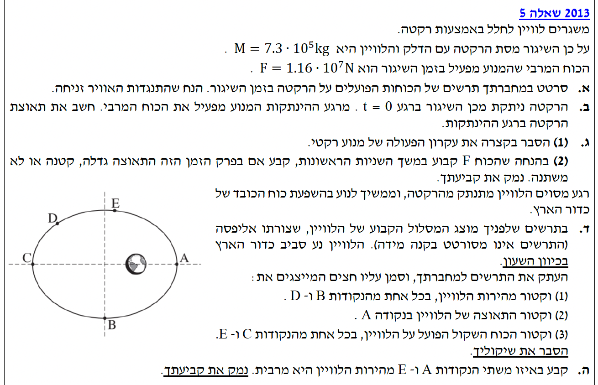

פתרון בגרות בפיזיקה
מכניקה 2013 - שאלה 5 (כבידה ותנועה)
פתרון מודרך, צעד-אחר-צעד הכולל תרשימי כוחות, שיקולי אנרגיה וניתוח תנועה בחלל.
עודכן:
--- --:--:--

[תמונת השאלה המקורית]
לא נמצאה תמונה בשם question-image.png באותה תיקייה.
מה נתון: רגע לאחר השיגור, הרקטה והלוויין (שמסתם הכוללת היא \( M \)) נעים כלפי מעלה. נתון כי התנגדות האוויר זניחה. הנתונים המספריים הם מסה \( M = 7.3 \cdot 10^5 \, \text{kg} \) וכוח דחף של המנוע \( F = 1.16 \cdot 10^7 \, \text{N} \). היחידות הן כבר ביחידות התקניות (MKS) ולכן אין צורך בהמרה (שלב 0 תקין).
מה מחפשים: עלינו לסרטט תרשים של הכוחות הפועלים על הרקטה בזמן השיגור.
נוסחאות ועקרונות בשימוש:
\( F = mg \)
אנו משתמשים בעקרון זיהוי הכוחות: כוח הכבידה הפועל כלפי מטה. בנוסף קיים כוח הדחף \( F \) שהמנוע מפעיל כלפי מעלה.
פתרון צעד-אחר-צעד:
על הרקטה פועלים בדיוק שני כוחות בציר האנכי:
- כוח הכבידה הפועל על המסה הכוללת, המסומן כ- \( W \) או \( Mg \), וכיוונו כלפי מטה (למרכז כדור הארץ).
- כוח הדחף שמפעיל המנוע, המסומן באות \( F \), וכיוונו כלפי מעלה (כיוון תנועת הרקטה).
טיפ מורה:
חשוב לשים לב: נאמר במפורש ש"התנגדות האוויר זניחה". לכן אנו לא מוסיפים חץ כלפי מטה של כוח התנגדות (גרר). לו היה אוויר, היינו מוסיפים כוח מטה נגד כיוון המהירות. הקפידו לקרוא את הנתונים המפשטים את הבעיה! כמו כן, כוח הדחף \( F \) מצויר ארוך יותר מ- \( Mg \) משום שהרקטה חייבת להאיץ כלפי מעלה בשיגור.
מה נתון: בנוסף לתרשים מהסעיף הקודם, יש לנו את הנתונים המספריים: המסה \( M = 7.3 \cdot 10^5 \, \text{kg} \), כוח הדחף \( F = 1.16 \cdot 10^7 \, \text{N} \). כמו כן, תאוצת נפילה חופשית על פני כדור הארץ היא \( g = 10 \, \text{m/s}^2 \).
מה מחפשים: את גודל התאוצה של הרקטה ברגע הניתוק מכַּן השיגור (רגע \( t = 0 \)). נסמן תאוצה זו באות \( a \).
נוסחאות מהדף:
\( \Sigma\vec{F} = m\vec{a} \)
\( F = mg \)
חישוב:
נבחר את כיוון מעלה להיות הכיוון החיובי של ציר ה-y. נרשום את משוואת הכוחות עבור ציר זה:
\[ \Sigma F_y = M \cdot a \]
\[ F - Mg = M \cdot a \]
נבודד את התאוצה \( a \) מאגף ימין:
\[ a = \frac{F - Mg}{M} = \frac{F}{M} - g \]
כעת נציב את הערכים המספריים הנתונים:
\[ a = \frac{1.16 \cdot 10^7}{7.3 \cdot 10^5} - 10 \]
נחשב את המנה (אפשר להיעזר בחוקי חזקות: \( 10^7 / 10^5 = 10^2 = 100 \)):
\[ a = \frac{1.16}{7.3} \cdot 100 - 10 \approx 0.158904 \cdot 100 - 10 = 15.8904 - 10 \]
\[ a = 5.8904 \, \text{m/s}^2 \]
מסקנה: לאחר עיגול ל-3 ספרות מהותיות, תאוצת הרקטה היא \( a = 5.89 \, \text{m/s}^2 \).
טיפ מורה:
שימו לב להצבת הסימנים במשוואת הכוחות! תאוצת הכובד \( g \) היא תמיד ערך חיובי של \( 10 \, \text{m/s}^2 \). הסימן המינוס לפני ה- \( Mg \) נובע מכך שבחרנו בציר חיובי כלפי מעלה (ככיוון התנועה), וכוח הכבידה פועל נגד ציר זה כלפי מטה. הקפדה על חוקי ניוטון בצורה אלגברית תמנע טעויות!
מה נתון: נתון שאנו עוסקים במנוע רקטי המשגר חללית.
מה מחפשים: הסבר קצר, מילולי ופיזיקלי, המסביר כיצד מנוע רקטי מייצר כוח דחף המסוגל להניע את הרקטה בחלל (או באוויר).
עקרונות בשימוש:
העיקרון הפיזיקלי המרכזי כאן הוא החוק השלישי של ניוטון (חוק הפעולה והתגובה), וניתן להסביר זאת גם דרך עקרון חוק שימור התנע.
הסבר פיזיקלי:
מנוע הרקטה שורף דלק ופולט גזים במהירות גבוהה מאוד דרך נחיר הפליטה שבתחתיתו, כלפי מטה (או אחורה נגד כיוון התנועה). הבחנה חשובה: מכיוון שהגזים הנפלטים היו קודם לכן חלק בלתי נפרד מהרקטה (הדלק), ככל שהגזים נפלטים החוצה, מסת הרקטה הולכת וקטנה בהדרגה.
על פי החוק השלישי של ניוטון: הרקטה מפעילה כוח על הגזים כלפי מטה (פעולה). כתגובה, הגזים הנפלטים מפעילים על הרקטה כוח שווה בגודלו והפוך בכיוונו כלפי מעלה (תגובה). כוח תגובה זה הוא בדיוק "כוח הדחף" שחישבנו בסעיפים הקודמים.
מסקנה: המנוע הודף מסת גז במהירות גבוהה כלפי מטה (תוך איבוד מסה עצמית), ובתגובה הגזים דוחפים את הרקטה כלפי מעלה בכוח שווה והפוך.
טיפ מורה:
זו נקודה שתלמידים רבים מתבלבלים בה: הרקטה לא "דוחפת את האוויר" או את הקרקע כדי לעלות! ההוכחה לכך היא שרקטות פועלות מצוין גם בוואקום של החלל שבו אין על מה "להישען". הכוח נוצר אך ורק מהאינטראקציה שבין הרקטה לגז שהיא עצמה פולטת (פעולה ותגובה פנימית).
מה נתון: מניחים שכוח הדחף \( F \) שהמנוע מפעיל נשאר קבוע במשך השניות הראשונות.
מה מחפשים: לקבוע אם תאוצת הרקטה בפרק זמן זה גדלה, קטנה או נשארת קבועה, ולנמק מדוע.
נוסחאות מהדף:
\( a = \frac{F - mg}{m} \)
ניתוח אלגברי:
ננתח את המשוואה לתאוצה לאורך זמן. אפשר גם לפשט אותה אלגברית לחלוקה ל-2 שברים:
\[ a = \frac{F}{m} - g \]
כעת, נבחן מה קורה לכל אחד מהמשתנים במשוואה כשהזמן עובר:
- הכוח \( F \) - נתון בשאלה כי הוא קבוע בשניות אלו.
- תאוצת הנפילה החופשית \( g \) - בקרבת כדור הארץ היא קבועה.
- מסת הרקטה \( m \) - הרקטה שורפת דלק ופולטת אותו החוצה. כתוצאה מכך, המסה הכוללת של הרקטה הולכת וקטנה!
אם המכנה \( m \) בשבר \( \frac{F}{m} \) הולך וקטן, הערך של השבר כולו הולך וגדל. מכיוון שאנו מחסירים ממנו מספר קבוע (\( g \)), ערך התאוצה כולו יגדל בהכרח.
מסקנה: תאוצת הרקטה גדלה. מסת הרקטה קטנה עקב שריפת הדלק, בעוד כוח הדחף קבוע. לפיכך השבר \( \frac{F}{m} \) גדל, ותאוצת הרקטה גדלה גם היא.
טיפ מורה:
מלכודת קלאסית! ברוב השאלות במכניקה "מסה" היא גודל קבוע. אך בבעיות של רקטות, כל הרעיון הוא פליטת מסה. עליכם תמיד לזכור לשאול את עצמכם "האם המסה באמת נשארת קבועה?" לפני שאתם מסיקים מסקנות על תאוצה.
נקודה חשובה נוספת: בעיקרון, כוח הכבידה קטן כאשר הרדיוס גדל. אך מכיוון שמדובר במספר שניות בודדות ומכיוון שאנו עוסקים בקרבת פני כדור הארץ, אנו נתייחס לתאוצת הכובד \( g \) כקבועה בפרק הזמן הקצר הזה. כשם שהתנגדות האוויר מוזנחת, כך נזניח את השינוי בתאוצת הכובד בסביבת פני הכדור. דגש זה נכתב מכיוון שמדובר בשאלת כבידה, ובשאלות כאלו בדרך כלל אין הנחה שתאוצת הכבידה קבועה.
מה נתון: הלוויין התנתק מהרקטה ונע כעת רק בהשפעת כוח הכובד של כדור הארץ. מסלולו אליפטי סביב כדור הארץ, ומוגדר כי כיוון התנועה הוא בכיוון השעון. נתונות נקודות על המסלול: A, B, C, D, E.
מה מחפשים: לסרטט את המסלול ולהוסיף לו 3 סוגי וקטורים: המהירות ב-B ו-D, התאוצה ב-A, והכוח השקול ב-C ו-E.
נוסחאות ועקרונות בשימוש:
\( F = G\frac{m_1 m_2}{r^2} \)
- כיוון וקטור מהירות \( \vec{v} \) הוא תמיד משיק למסלול בכיוון התנועה.
- וקטור התאוצה \( \vec{a} \) פועל תמיד באותו כיוון של הכוח השקול.
- כוח הכבידה הוא כוח משיכה למרכז כדור הארץ, ולכן גם הכוח וגם התאוצה מכוונים תמיד אל מרכז כדור הארץ.
סרטוט ווקטורים:
ננתח כל דרישה בנפרד:
- מהירות ב-B ו-D: התנועה היא עם כיוון השעון. בנקודה ההכי נמוכה B, המשיק הוא אופקי שמאלה. בנקודה D (ברביע השמאלי-עליון), הלוויין נע מעלה וימינה, ולכן המשיק מצביע שמאלה ולמעלה באלכסון.
- תאוצה ב-A: התאוצה היא בכיוון הכוח השקול. כדור הארץ נמצא משמאל לנקודה A, לכן הכוח כיוונו שמאלה אל מרכז כדור הארץ, ולכן התאוצה כיוונה שמאלה.
- כוח שקול ב-C ו-E: זהו כוח משיכה למרכז כדור הארץ. בנקודה C כדור הארץ נמצא מימינה, אז הכוח כיוונו ימינה. בנקודה E כדור הארץ נמצא למטה וקצת ימינה ממנה, ולכן הכוח יצביע באלכסון ימינה ולמטה.
טיפ מורה:
חשוב להבין! לעיתים תלמידים מציירים כוח עם כיוון התנועה. זו טעות נפוצה. וקטור המהירות מראה לאן הגוף *נע* באותו רגע (משיק). וקטורי הכוח והתאוצה מראים מי *מושך* את הגוף. מכיוון שהמנוע כבוי בסעיף זה, הכוח היחיד שקיים בחלל הוא כבידת כדור הארץ, ולכן גם הכוח וגם התאוצה מצביעים אך ורק לכיוונו.
מה נתון: לפנינו שתי נקודות, A ו- E, כאשר הלוויין ממשיך לנוע במסלול האליפטי בהשפעת הכבידה בלבד.
מה מחפשים: לקבוע באיזו משתי הנקודות (A או E) גודל מהירות הלוויין הוא הגדול ביותר (מהירות מרבית) ולנמק.
עקרונות בשימוש:
העיקרון המוביל בפתרון זה הוא החוק השני של קפלר (חוק השטחים).
ניתוח על פי חוקי קפלר:
על פי החוק השני של קפלר, הרדיוס המחבר את הלוויין למרכז כדור הארץ מכסה שטחים שווים בפרקי זמן שווים. המסקנה הישירה מחוק זה היא שיש קשר הפוך בין המרחק למהירות: ככל שהגוף קרוב יותר למרכז המשיכה, כך הוא מהיר יותר.
מתוך התבוננות בסרטוט הנתון, ניתן לראות בבירור כי נקודה A היא הנקודה הקרובה ביותר למרכז כדור הארץ לאורך כל המסלול האליפטי, ואילו נקודה E רחוקה יותר.
מסקנה: בנקודה A מהירות הלוויין היא המרבית. על פי החוק השני של קפלר, מכיוון שנקודה A היא הקרובה ביותר לכדור הארץ, גודל המהירות בה חייב להיות הגדול ביותר.
טיפ מורה:
חשוב לדעת להסביר זאת גם דרך שיקולי אנרגיה! כיוון שפועלים רק כוחות משמרים (כוח הכבידה), האנרגיה המכנית הכוללת של הלוויין נשמרת. ככל שהגוף קרוב יותר לכדור הארץ (כמו בנקודה A), האנרגיה הפוטנציאלית הכובדית שלו קטנה יותר (הערך הופך ליותר שלילי). מכיוון שאין כוחות לא משמרים שמבצעים עבודה, האנרגיה הקינטית בנקודה זו חייבת להיות הגדולה ביותר כדי להשלים לסכום קבוע. אנרגיה קינטית מקסימלית פירושה בהכרח מהירות מקסימלית.